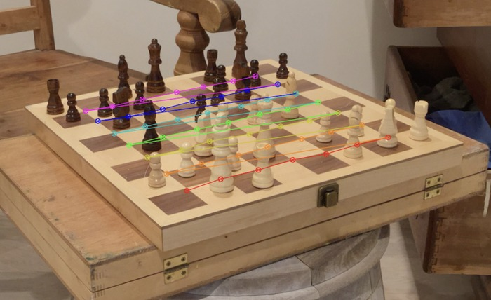
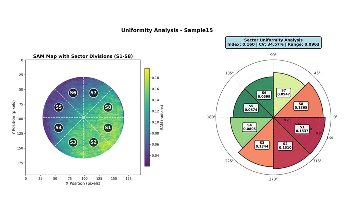
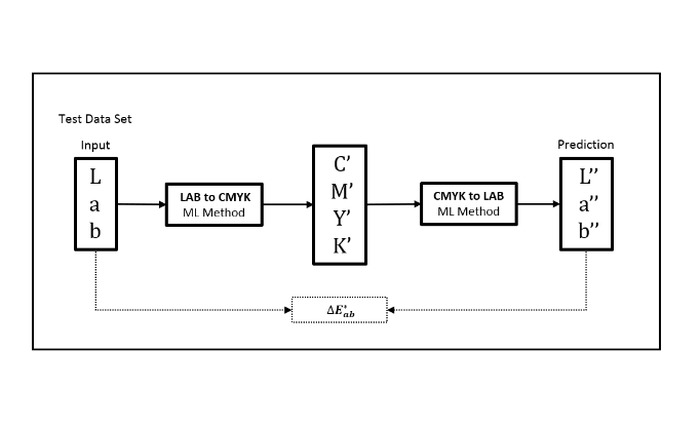
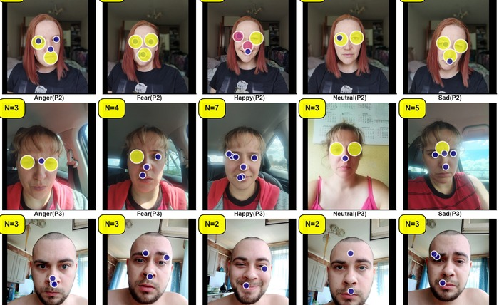

Research
My work sits at the intersection of computational colour, image physics, and deep learning. I am especially interested in problems where physical constraints can guide model training.

Lightness-Stable Intrinsic Decomposition from Real Multi-Illumination Photographs
A single photograph cannot tell a dark surface from a dimly lit one, so lighting leaks into the recovered albedo. CIAI trains on pairs of real photographs of one scene under different lighting and requires their albedos to agree. It makes the albedo markedly more stable in lightness; it does not fix colour, because the real pairs barely change light colour and the loss sees only brightness. The next stage separates shading luminance from shading chroma.

Fine-tuned a vision-language quality model to score portrait noise, texture, and contrast separately, for camera portrait-mode benchmarking.

Keeps a quality-1 JPEG as the base layer and adds a 10M-parameter neural codec for what the JPEG got wrong, so every file is still a valid JPEG. On Kodak it reaches 37.41 dB at 1.56 bpp, 2.1 dB above JPEG at the same file size.

Sends only the informative patches of an image plus a one-sentence caption. A Masked Autoencoder and a caption-guided Stable Diffusion refiner rebuild the rest at very low bit rates.
Coursework
Selected technical reports from COSI coursework across the consortium — Université Jean Monnet (France), NTNU (Norway), and the University of Eastern Finland.

A full classical stereo pipeline (calibration, SGBM disparity, ICP fusion, meshing) on ETH3D and Middlebury Chess. The fused point cloud reached a Chamfer distance of 0.043 m and F1 0.638.

A 450–950 nm hyperspectral inspection pipeline for AR-waveguide gratings, built with Dispelix Oy. Three metrics separated all 5 defect types, and a 4-operator Gage R&R study kept measurement error under 12%.

Benchmarked ANN, DNN, SVR, and RBF regressors against ICC-profile colour transforms on FOGRA51. The classical DemoIccMAX transform won on every metric (median round-trip ΔE00 0.5 vs 2.38 for the best ML model).

A controlled eye-tracking experiment on emotion-recognition gaze patterns, using dispersion-threshold fixation detection.